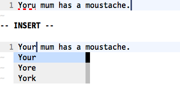

{% include JB/setup %}
{% raw %}
<div>


<table class="arr-recipe" id="sec.spelling.autocompletion">
<tr class="calibre14">
<td class="arr-recipe-number">Tip 121</td>
<td class="arr-recipe-name">Fix Spelling Errors from Insert Mode</td>
</tr>
</table>
<p id="N1C236" class="calibre4">
<span class="calibre5">
        Vim’s spelling autocompletion allows us to fix typos without even having to leave Insert mode.
    </span>
</p>
<p id="N1C24E" class="calibre4">
      Picture this: we’ve just typed a line of text, and then we realize that there’s a spelling mistake a few words back. What can we do?
    </p>
<h3 class="calibre22">Preparation</h3>
<p id="N1C255" class="calibre4">
        This technique depends on having the spell checker enabled:
      </p>
<table class="processedcode">
<tr class="calibre28">
<td class="codeprefix" valign="top">
<span>=&gt; </span>
</td>
<td class="codeline" valign="top">
<div class="calibre29">
​<code class="calibre30">​<strong class="prompt">:set spell</strong>​</code>​</div>
</td>
</tr>
</table>
<h3 class="calibre22">The Usual Way: Switch to Normal Mode</h3>
<p id="N1C269" class="calibre4">
        To fix the mistake, we could switch to Normal mode, use the <span class="calibre17">[s</span> command to jump back to the spelling mistake, and then use <span class="calibre17">1z=</span> to fix it. Having made the correction, we could then switch back to Insert mode with the <span class="calibre17">A</span> command, continuing where we left off.
      </p>
<h3 class="calibre22">The Fast Way: Use Spelling Autocompletion</h3>
<p id="N1C279" class="calibre4">
        Alternatively, we could fix the error from Insert mode using the <span class="calibre17">&lt;C-x&gt;s</span> command, which triggers a special form of autocompletion (see <strong xmlns:str="http://exslt.org/strings" class="calibre10">compl-spelling</strong>
<a xmlns:str="http://exslt.org/strings" href="http://vimdoc.sourceforge.net/htmldoc/insert.html#compl-spelling">
​</a>). We could just as well use <span class="calibre17">&lt;C-x&gt;&lt;C-s&gt;</span>, which is slightly easier to type. In this figure, we see screenshots taken before and after triggering the <span class="calibre17">&lt;C-x&gt;s</span> command. Note that we’re in Insert mode throughout:
      </p>
<div xmlns:str="http://exslt.org/strings" class="calibre1">

</div>
<p id="N1C28E" class="calibre4">
        The autocomplete word list contains the same suggestions as we saw in <a xmlns:str="http://exslt.org/strings" href="f_0160.html#sec.spell.check">Tip 118</a>, when we used the <span class="calibre17">z=</span> command.
      </p>
<p id="N1C298" class="calibre4">
        When we trigger an autocomplete command, Vim usually offers suggestions on how to complete the word at the current cursor position. But in the case of <span class="calibre17">&lt;C-x&gt;s</span>, Vim scans backward from the cursor position, stopping when it finds a misspelled word. It then builds a word list from suggested corrections and presents them in an autocomplete pop-up menu. We can choose a result using any of the techniques described in <a xmlns:str="http://exslt.org/strings" href="f_0153.html#sec.auto.popup">Tip 112</a>.
      </p>
<p id="N1C2A2" class="calibre4">
        The <span class="calibre17">&lt;C-x&gt;s</span> command really comes into its own when a line contains more than one misspelled word. Using the same example as in the previous figure, if we were to run <code class="cf">:set spelllang=en_us</code>, then the word “moustache” would also be marked as misspelled. Starting off in Insert mode with our cursor at the end of the line, we could fix both mistakes just by typing <span class="calibre17">&lt;C-x&gt;s</span> twice. Try it yourself. It’s neat!
      </p>

<div class="copyright">Copyright © 2012, The Pragmatic Bookshelf.</div>


<script src="scripts/book_local.js" type="text/javascript" class="calibre2"/>
</div>

{% endraw %}

